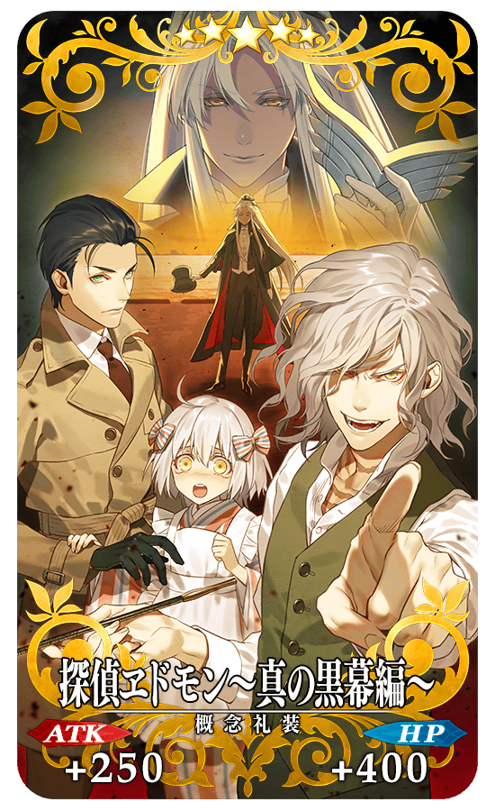
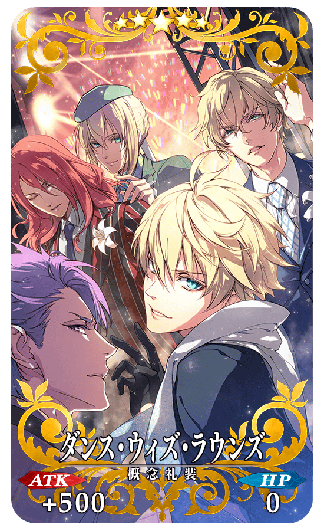
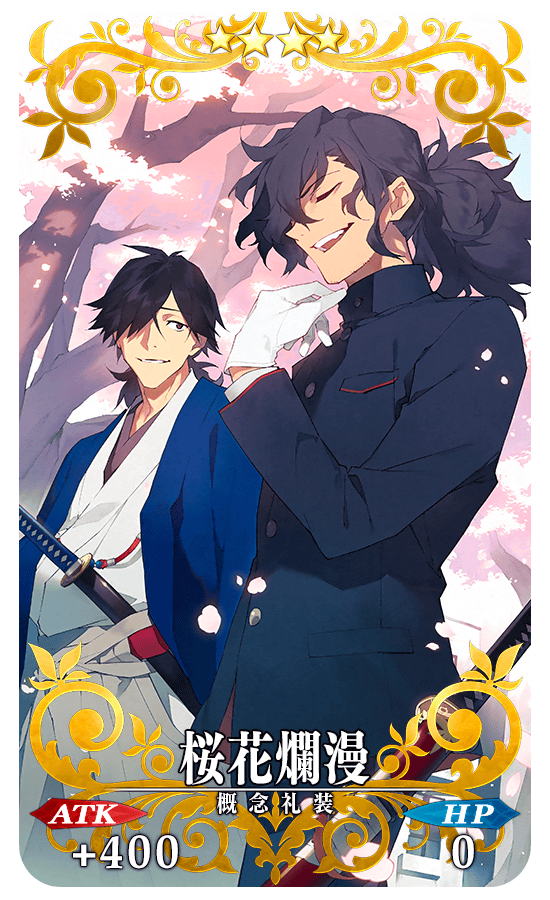
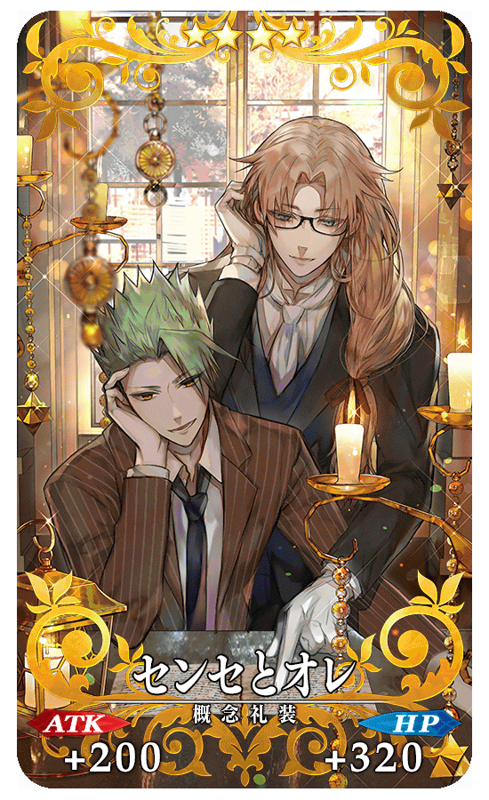
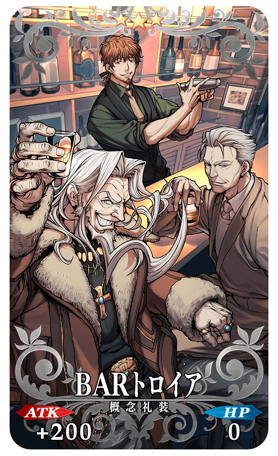
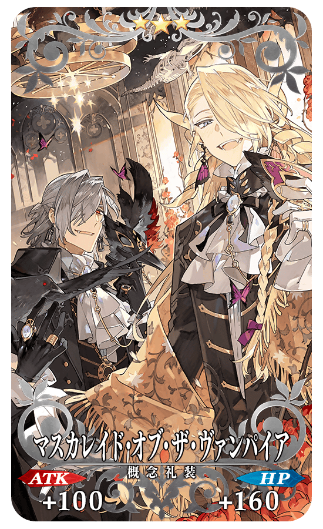

【3月13日(三) 23:00圖片更新】
◆「迦勒底男孩收藏2019Pick Up召喚(每日交替)」期間◆
期間:2019年3月11日(一) 17:00～3月25日(一) 11:59
舉辦期間限定「迦勒底男孩收藏2019Pick Up召喚(每日交替)」！
「★5(SSR)新宿的Archer(詹姆斯・莫里亞蒂)」以期間限定登場！
另外，本次由於是“男孩收藏”，只限包含根據章節進行追加Servant的男性Servant為召喚對象。
「迦勒底男孩收藏2019Pick Up召喚(每日交替)」中，對象★5(SSR)男性Servant以每日交替Pick Up、「★5(SSR)新宿的Archer(詹姆斯・莫里亞蒂)」「★4(SR)蘭陵王」「★4(SR)新宿的Assassin(燕青)」「★3(R)亞歷山大」常駐Pick Up。
詳情請在聖晶石召喚畫面左下的召喚詳細確認。
「★5(SSR)探偵ヱドモン～真の黒幕編～」「★5(SSR)ダンス・ウィズ・ラウンズ」「★4(SR)深謀遠慮」「★4(SR)桜花爛漫」「★4(SR)センセとオレ」「★3(R)BARトロイア」「★3(R)BARトロイア」「★3(R)アンダー・ザ・ナイフ」「★3(R)エンジェル・ブレス」「★3(R)マスカレイド・オブ・ザ・ヴァンパイア」做為期間限定概念禮裝登場！
裝備上述9種概念禮裝的話，在期間限定活動「古老蜘蛛與懐舊共同紡絲」中會提升活動收集道具的掉落獲得數。
◆有關Servant的注意◆ ※新宿的Archer(詹姆斯・莫里亞蒂)在Pick Up召喚期間結束後，不會追加到故事召喚。 ※根據章節進行追加的男性Servant就算章節通過前也能入手。 ※俄里翁、恩奇杜、夏爾・德翁、阿斯托爾福也包含在被抽出對象。 ※以每日交替Pick Up的★5(SSR)男性Servant、蘭陵王、新宿的Assassin(燕青)、亞歷山大在Pick Up期間結束後仍會在故事召喚被抽出。 ※關於隱藏真名的Servant，透過主線關卡的進行會讓Servant及一部份寶具的名稱變化。
◆有關Servant真名的注意◆
在2018年12月31日(一) 23:00以後新配信的主線故事及期間限定活動、一部份關卡、宣傳活動及召喚中，會顯示隱藏真名的對象Servant真名。
※已經配信的主線故事、復刻活動、一部份關卡中不在此限。
◆有關概念禮裝的注意◆ ※BARトロイア、アンダー・ザ・ナイフ、エンジェル・ブレス、マスカレイド・オブ・ザ・ヴァンパイア在Pick Up期間中，也能靠友情點數召喚獲得。 ※請注意自友情點數召喚抽出的BARトロイア、アンダー・ザ・ナイフ、エンジェル・ブレス、マスカレイド・オブ・ザ・ヴァンパイアは、在自動變還設定登錄★3(R)概念禮裝的情況，會變成自動變還的對象。
Pick Up期間中，期間限定Servant、Pick Up Servant、期間限定概念禮裝的出現機率提升！
10次召喚中確定1張★4(SR)以上和確定1位★3(R)以上的Servant！
※確定★4(SR)以上包含Servant和概念禮裝。
※本頁面圖片皆為開發中。會有與實際圖片有所差異的情況。
| 每日交替Pick Up期間 | 每日交替Pick Up內容 |
|---|---|
| 3月11日(一) 17:00～ 3月12日(二) 22:59 |
新宿的Archer(詹姆斯・莫里亞蒂) 蘭陵王 新宿的Assassin(燕青) |
| 3月12日(二) 23:00～3月13日(三) 22:59 | 新宿的Archer(詹姆斯・莫里亞蒂) 阿基里斯 蘭陵王 新宿的Assassin(燕青) |
| 3月13日(三) 23:00～3月14日(四) 22:59 | 新宿的Archer(詹姆斯・莫里亞蒂) 弗拉德三世(Berserker) 蘭陵王 新宿的Assassin(燕青) |
| 3月14日(四) 23:00～3月15日(五) 22:59 | 新宿的Archer(詹姆斯・莫里亞蒂) 尼古拉・特斯拉 蘭陵王 新宿的Assassin(燕青) |
| 3月15日(五) 23:00～3月16日(六) 22:59 | 新宿的Archer(詹姆斯・莫里亞蒂) 恩奇杜 蘭陵王 新宿的Assassin(燕青) |
| 3月16日(六) 23:00～3月17日(日) 22:59 | 新宿的Archer(詹姆斯・莫里亞蒂) 李書文(Assassin) 蘭陵王 新宿的Assassin(燕青) |
| 3月17日(日) 23:00～3月18日(一) 22:59 | 新宿的Archer(詹姆斯・莫里亞蒂) 阿周那 蘭陵王 新宿的Assassin(燕青) |
| 3月18日(一) 23:00～3月19日(二) 22:59 | 新宿的Archer(詹姆斯・莫里亞蒂) 庫・夫林〔Alter〕 蘭陵王 新宿的Assassin(燕青) |
| 3月19日(二) 23:00～3月20日(三) 22:59 | 新宿的Archer(詹姆斯・莫里亞蒂) 諸葛孔明〔埃爾梅羅II世〕 蘭陵王 新宿的Assassin(燕青) |
| 3月20日(三) 23:00～3月21日(四) 22:59 | 新宿的Archer(詹姆斯・莫里亞蒂) 項羽 蘭陵王 新宿的Assassin(燕青) |
| 3月21日(四) 23:00～3月22日(五) 22:59 | 新宿的Archer(詹姆斯・莫里亞蒂) 奧茲曼迪亞斯 蘭陵王 新宿的Assassin(燕青) |
| 3月22日(五) 23:00～3月23日(六) 22:59 | 新宿的Archer(詹姆斯・莫里亞蒂) 迦爾納 蘭陵王 新宿的Assassin(燕青) |
| 3月23日(六) 23:00～3月24日(日) 22:59 | 新宿的Archer(詹姆斯・莫里亞蒂) 拿破崙 蘭陵王 新宿的Assassin(燕青) |
| 3月24日(日) 23:00～3月25日(一) 11:59 | 新宿的Archer(詹姆斯・莫里亞蒂) 蘭陵王 新宿的Assassin(燕青) |
※請注意會以每日交替變更Pick Up的Servant。
|  |
★★★★★SSR
|
|  |
★★★★★SSR |

|
★★★★SR |
|  |
★★★★SR |
|
 ※3月13日(三) 23:00修正 |
★★★★SR |
|  |
★★★R |
|
★★★R |
|
★★★R |
|  |
★★★R |

※上述「★5(SSR)阿周那」的立繪為靈基再臨第2階段。

※上述「★5(SSR)尼古拉・特斯拉」的立繪為靈基再臨第2階段。

※上述「★5(SSR)恩奇杜」的立繪為靈基再臨第2階段。

※上述「★5(SSR)迦爾納」的立繪為靈基再臨第2階段。

※上述「★5(SSR)阿基里斯」的立繪為靈基再臨第2階段。

※上述「★5(SSR)奧茲曼迪亞斯」的立繪為靈基再臨第2階段。

※上述「★5(SSR)李書文(Assassin)」的立繪為靈基再臨第2階段。
※上述「★5(SSR)弗拉德三世(Berserker)」的立繪為靈基再臨第2階段。
※上述「★5(SSR)庫・夫林〔Alter〕」的立繪為靈基再臨第2階段。

※上述「★5(SSR)項羽」的立繪為靈基再臨第2階段。
介紹「★5(SSR)新宿的Archer(詹姆斯・莫里亞蒂)」的寶具演出！
在「Fate/Grand Order」官方網站內的公告中，以影片公開寶具演出，敬請確認。
介紹「★5(SSR)阿周那」「★5(SSR)拿破崙」「★5(SSR)尼古拉・特斯拉」「★5(SSR)恩奇杜」「★5(SSR)迦爾納」「★5(SSR)阿基里斯」「★5(SSR)奧茲曼迪亞斯」「★5(SSR)諸葛孔明〔埃爾梅羅II世〕」「★5(SSR)李書文(Assassin)」「★5(SSR)弗拉德三世(Berserker)」「★5(SSR)庫・夫林〔Alter〕」「★5(SSR)項羽」「★4(SR)蘭陵王」「★4(SR)新宿的Assassin(燕青)」的寶具演出！
在「Fate/Grand Order」官方網站內的公告中，以影片公開寶具演出，敬請確認。
其他還有，取得期間限定概念禮裝及壁紙「迦勒底男孩收藏2019」和期間限定活動「古老蜘蛛與懐舊共同紡絲」同時舉辦！
關於詳情，請自下述橫幅確認。

【3月13日(三) 23:00圖片更新】